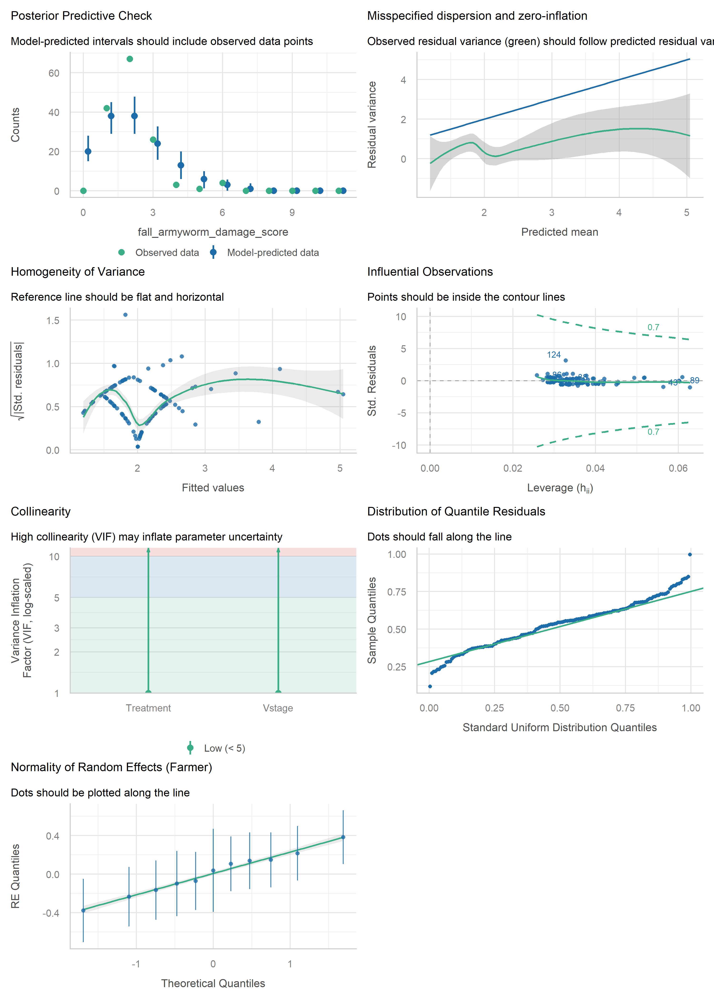
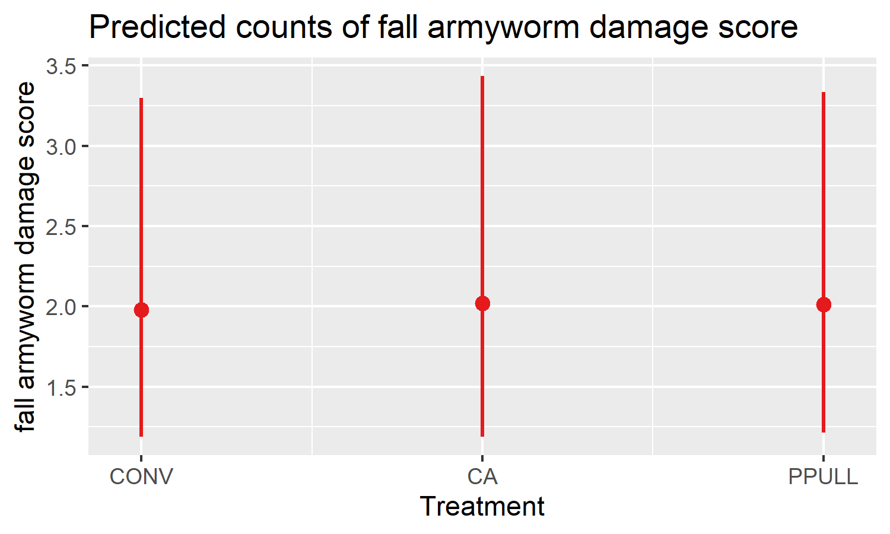

Chapter 4 Managing on-farm experiments
This chapter presents a workflow for collecting and managing data from on-farm experiments using KoboToolBox and R, with QR codes to ensure reliable identification of farms, trials and treatments.
The use of QR codes provides an efficient and reliable system for identifying farms/trials and plots/treatments during data collection in on-farm experiments.
Each QR code encodes a unique identifier that corresponds to a farmer/experimental site or a specific plot/treatment. During field monitoring, these codes can be scanned directly in KoboToolbox, automatically filling in the correct ID in the data collection form. This approach minimizes transcription and labeling errors, ensures consistent tracking of repeated measurements, and facilitates seamless integration of field data with analytical workflows in R.
In the CGIAR Agroecology initiative in Zimbabwe, each farmer hosting a trial received an ID card with a unique QR code. Before any data collection on a given farm/trial, the card was scanned to confirm the correct trial site and verify that the farmer was present. Each plot within a trial also had its own signboard displaying a QR code linked to its treatment, ensuring every observation was associated with the correct experimental condition.
Figure 4.1: ID card with unique QR code received by each farmer hosting a trial in the CGIAR Agroecology initiative in Zimbabwe (left) and signage with a unique QR code for each plot/treatment in the corresponding trial
4.1 Generating QR codes
We will now demonstrate how to generate unique QR codes for both farms/trials and plots/treatments using the R package baRcodeR (Wu and Colautti 2022).
if (!require("baRcodeR")) install.packages("baRcodeR")
library(baRcodeR)For demonstration and data protection compliance, we will use fictional farmer names that do not correspond to any real individuals. This ensures that no personal information is used while illustrating the workflow.
set.seed(123)
given = c("Tendai", "Fungai", "Tawanda", "Ropafadzo", "Tafadzwa", "Nyasha", "Chiedza",
"Anesu", "Munyaradzi", "Chenai", "Kudzai", "Tariro", "Simba", "Rutendo", "Kudzanai",
"Vimbai", "Tanaka", "Blessing", "Shamiso", "Rudo", "Kuda", "Tinashe", "Chipo",
"Prosper", "Sekai", "Loveness", "Godfrey", "Mercy", "Brenna", "Nokutenda", "Sibusiso",
"Vusumuzi", "Eliazar", "Palesa", "Tafara", "Mandla", "Zvikomborero", "Tanyaradzwa")
surname = c("Mupfumi", "Chikwepa", "Mazarura", "Nyamadzawo", "Chikora", "Makarau",
"Gwekwerere", "Mandizha", "Sibanda", "Gonye", "Mtsvera", "Ndlovu", "Moyo", "Ncube",
"Mapfumo", "Chidavaenzi", "Mutsvangwa", "Dube", "Mashingaidze", "Nyamapfene",
"Gunda", "Mungano", "Chikowore", "Matambanadzo", "Zimuto", "Mabhunu", "Chinyoka",
"Chimanikire", "Chiriseri", "Gwanyanya", "Madziva", "Mapiravana", "Gwatidzo",
"Chikore", "Mashingairi", "Chirwa", "Chinyamurindi")
n = 25
fake_names = paste(sample(given, n, replace = TRUE), sample(surname, n, replace = TRUE))
fake_names [1] "Sibusiso Mapiravana" "Kudzanai Gwekwerere" "Rutendo Sibanda"
[4] "Tawanda Gonye" "Zvikomborero Chikowore" "Rutendo Chinyoka"
[7] "Sekai Gwekwerere" "Loveness Chinyoka" "Godfrey Mapiravana"
[10] "Tafadzwa Zimuto" "Godfrey Chikore" "Mercy Chiriseri"
[13] "Munyaradzi Chikora" "Brenna Mandizha" "Tafara Ndlovu"
[16] "Anesu Moyo" "Loveness Dube" "Chiedza Gwatidzo"
[19] "Munyaradzi Chinyoka" "Shamiso Zimuto" "Mandla Gunda"
[22] "Rutendo Mapfumo" "Tanaka Mabhunu" "Tariro Madziva"
[25] "Kudzanai Chidavaenzi" 4.1.1 Generating QR codes for farmers/trials
We now generate a first set of QR codes corresponding to farmers or trials. Each QR code encodes one of the fictional farmer names.
The create_PDF() function from baRcodeR generates a printable PDF containing all QR codes and their labels, which can later be laminated or used on ID cards in the field (as represented in Figure 5.1 above).
create_PDF(Labels = fake_names, numcol = 2, numrow = 4, Fsz = 8, name = "farms_qrcodes")
knitr::include_graphics("farms_qrcodes.pdf")Once the PDF is created, each farmer has an identification label that can be scanned during data collection. Scanning the QR code in KoboToolbox automatically retrieves the farmer’s unique ID, ensuring that all data collected belong to the correct individual/site.
4.1.2 Generating QR codes for plots/treatments
We will now generate QR codes for every combination of farmer × treatment. Each farm typically hosts multiple treatments or plots. In this example, there are three treatments per trial: ‘conventional practice’ (CONV), ‘conservation agriculture’ (CA), and ‘push-pull’ (PPULL). The expand.grid() function creates all combinations, which are then concatenated into unique identifiers such as: ‘Tendai Mupfumi-CONV’, ‘Tendai Mupfumi-CA’, ‘Tendai Mupfumi-PPULL’, etc. Each of these labels corresponds to a unique plot within a farmer’s trial.
l = expand.grid(FR = fake_names, TR = c("CONV", "CA", "PPULL"))
l = paste(l$FR, l$TR, sep = "-")
create_PDF(Labels = l, numcol = 2, numrow = 4, Fsz = 8, name = "plots_qrcodes")
knitr::include_graphics("plots_qrcodes.pdf")The resulting PDF contains QR codes for all farmer × treatment combinations, which can be printed on plot signboards (as represented in Figure 5.1 above). During fieldwork, scanning the plot’s QR code ensures that measurements (e.g., crop establishement, assessment of pest damage, estimation of yield) are automatically attributed to the correct farm and treatment.
4.2 Integrating QR codes in KoboToolBox surveys
QR codes can be easily integrated into KoboToolbox surveys to automatically record the identity of farms/trials and plots/treatments during data collection. This ensures that each observation is correctly linked to its corresponding farmer/trial and plot/treatment without manual typing or risk of mislabeling.
As an example, consider the survey questionnaire used to monitor on-farm experiments under the CGIAR Agroecology Initiative in Zimbabwe. The corresponding XLSForm (used to build the questionnaire in KoboToolbox) is available here: https://github.com/FBaudron/book_standardized_workflows/blob/main/04-managing_on_farm_experiments/EXPERIMENT%20SURVEY%20TOOL.xlsx. A PDF version of the questionnaire is also provided: https://github.com/FBaudron/book_standardized_workflows/blob/main/04-managing_on_farm_experiments/EXPERIMENT%20SURVEY%20TOOL.pdf. You can adapt this survey questionnaire to your own use.
In this questionnaire, several variables are of type ‘barcode’: ‘farmID’, ‘plotID_1’, ‘plotID_2’, and ‘plotID_3’ (each trial consists of three treatments arranged in three separate plots). The three treatments are: ‘conventional practice’ (CONV), ‘conservation agriculture’ (CA), and ‘push-pull’ (PPULL).
Each of these variables corresponds to a question where the enumerator scans a QR code instead of typing an ID. The farmID is obtained by scanning the farmer’s ID card, while each plotID corresponds to the QR code placed on a specific plot signboard (Figure 5.1).
In the Kobo form, the questions for the three plots are grouped between ‘begin_repeat’ and ‘end_repeat’ statements. This looping structure allows enumerators to enter repeated measurements (e.g., pest assessment in several points in each plot, typically 5, following a W-shaped sampling pattern) efficiently and consistently.
4.2.1 Data from KoboToolBox surveys that include QR codes
Once data have been collected in KoboToolbox, they can be exported in Excel format for analysis in R. To illustrate this, you can download a sample dataset generated from the survey described above here: https://github.com/FBaudron/book_standardized_workflows/blob/main/04-managing_on_farm_experiments/EXPERIMENT%20SURVEY%20DATA.xlsx.
This dataset was downloaded directly from KoboToolbox as an Excel file. It contain pest damage data collected on sorghum over one season in three different plots (corresponding to the different treatments described above). The file is made of four sheets: one main sheet with general information (e.g., farm ID, enumerator name, date), and three treatment sheets, each corresponding to pest assessment data in one of the three plots recorded through the ‘begin_repeat’/‘end_repeat’ structure in the questionnaire.
A standalone R script containing the full workflow below is available at the following link: https://github.com/FBaudron/book_standardized_workflows/blob/main/04-managing_on_farm_experiments/managing_experiments.R.
We load the necessary packages and import the data in R.
if (!require("openxlsx")) install.packages("openxlsx")
if (!require("tidyr")) install.packages("tidyr")
if (!require("lmerTest")) install.packages("lmerTest")
if (!require("performance")) install.packages("performance")
if (!require("ggeffects")) install.packages("ggeffects")
if (!require("sjPlot")) install.packages("sjPlot")
if (!require("DHARMa")) install.packages("DHARMa")
library(openxlsx)
library(tidyr)
library(lmerTest)
library(performance)
library(ggeffects)
library(sjPlot)
library(DHARMa)
data = read.xlsx("EXPERIMENT SURVEY DATA.xlsx", sheet = 1)
sc1 = read.xlsx("EXPERIMENT SURVEY DATA.xlsx", sheet = 2)
sc2 = read.xlsx("EXPERIMENT SURVEY DATA.xlsx", sheet = 3)
sc3 = read.xlsx("EXPERIMENT SURVEY DATA.xlsx", sheet = 4)Each plot’s QR code (scanned in the field) produces a text string such as ‘Tendai Mupfumi-CA’ or ‘Rudo Makarau-CONV’. These strings combine the farmer’s name and the treatment applied to that plot.
To make the data easier to analyze, we split each plot ID column into two new columns: farmer - extracted from the first part of the QR code label - and a renamed column for the treatment in that plot (e.g., ‘1st plot’, ‘2nd plot’). Since the farmer’s name is already recorded via the farmID QR code at the beginning of the survey, we later drop the redundant farmer column from each plot section. This leaves a clean dataset with one row per trial, including the farmer ID and treatments for the three plots. We also retain the submission ID (’_index’) to be able to later merge this data with pest assessment data.
data = separate(data = data, col = "Scan.the.QR.code.of.the.1st.plot", into = c("Farmer",
"1st plot"), sep = "-")
data = data[, c(3, 17, 5:7)]
data = separate(data = data, col = "Scan.the.QR.code.of.the.2nd.plot", into = c("Farmer",
"2nd plot"), sep = "-")
data = data[, c(1:3, 5:6)]
data = separate(data = data, col = "Scan.the.QR.code.of.the.3rd.plot", into = c("Farmer",
"3rd plot"), sep = "-")
data = data[, c(1:4, 6)]We split the main dataset into three separate datasets, one for each treatment. Each of these treatment-specific datasets contains three key fields: the farmer name, the treatment name, and the submission ID. Submission ID will allow merging with the repeated pest assessment data collected in KoboToolbox.
For each treatment dataframe, we reorder the columns to place the submission ID first. We also remove columns that are not needed for analysis (e.g., submission date), keeping only the fields required for analysis.
data1 = data[, c(1:3)]
data2 = data[, c(1:2, 4)]
data3 = data[, c(1:2, 5)]
sc1 = sc1[, c(11, 1:8)]
sc2 = sc2[, c(11, 1:8)]
sc3 = sc3[, c(11, 1:8)]We merge each treatment dataset with its corresponding pest assessment data using the submission ID. In KoboToolbox exports, ’_index’ identifies the main submission, while ’_parent_index’ links repeated sections. This merge ensures that each plot’s pest assessment data aligns correctly with the corresponding farmer and treatment. After merging, we rename the plot columns to ‘Treatment’.
We then combine the six treatment datasets into a single unified dataset. The submission ID is removed since it is no longer needed after merging. Selected columns are renamed to clearly reflect their contents, including the ‘Farmer’ column (captured from the QR code scanned at the start of the form) and various pest damage scores.
data1 = merge(data1, sc1, by.x = "_index", by.y = "_parent_index", all.y = TRUE)
data2 = merge(data2, sc2, by.x = "_index", by.y = "_parent_index", all.y = TRUE)
data3 = merge(data3, sc3, by.x = "_index", by.y = "_parent_index", all.y = TRUE)
names(data1)[3] = "Treatment"
names(data2)[3] = "Treatment"
names(data3)[3] = "Treatment"
data = rbind(data1, data2, data3)
data = data[, -c(1)]
names(data)[c(1, 4:10)] = c("Farmer", "armmoured_cricket_leaf_damage", "armmoured_cricket_damage_score",
"fall_armyworm_leaf_damage", "fall_armyworm_frass_whorl", "fall_armyworm_damage_score",
"stalk_borer_leaf_damage", "stalk_borer_damage_score")4.2.2 Running basic statistical models on the cleaned data
Using the cleaned and merged dataset, we fit a mixed-effects model to analyze the severity of fall armyworm damage.
We first set the levels of the variable Treatment to ensure that ‘CONV’ (conventional practice) is used as the reference category, since R orders factor levels alphabetically by default. We then fit a generalized linear mixed-effects model to explain the variability in fall armyworm severity scores. Treatment and crop growth stage (Vstage) are included as fixed effects, while the farm (Farmer) is included as a random effect to account for variability among farms. Because the severity score is discrete (1–9), we use a Poisson distribution.
We evaluate model performance using the function check_model() of the R package performance (Lüdecke et al. 2021) to ensure the assumptions of the mixed-effects model are reasonably met.
data$Treatment = factor(data$Treatment, levels = c("CONV", "CA", "PPULL"))
mod_faw_severity = glmer(fall_armyworm_damage_score ~ Treatment + Vstage + (1 | Farmer),
data = data, family = poisson())
check_plot = check_model(mod_faw_severity)
print(check_plot)
We examine the model results using both ANOVA and the model summary to assess the significance of fixed effects and to understand the estimated coefficients.
anova(mod_faw_severity)Analysis of Variance Table
npar Sum Sq Mean Sq F value
Treatment 2 0.0169 0.0085 0.0085
Vstage 1 5.4042 5.4042 5.4042summary(mod_faw_severity)Generalized linear mixed model fit by maximum likelihood (Laplace
Approximation) [glmerMod]
Family: poisson ( log )
Formula: fall_armyworm_damage_score ~ Treatment + Vstage + (1 | Farmer)
Data: data
AIC BIC logLik -2*log(L) df.resid
424.5 439.3 -207.2 414.5 138
Scaled residuals:
Min 1Q Median 3Q Max
-1.01490 -0.33144 -0.04122 0.28653 3.09858
Random effects:
Groups Name Variance Std.Dev.
Farmer (Intercept) 0.07013 0.2648
Number of obs: 143, groups: Farmer, 11
Fixed effects:
Estimate Std. Error z value Pr(>|z|)
(Intercept) 0.36511 0.19565 1.866 0.0620 .
TreatmentCA 0.01969 0.14880 0.132 0.8947
TreatmentPPULL 0.01554 0.14022 0.111 0.9118
Vstage 0.09504 0.04069 2.336 0.0195 *
---
Signif. codes: 0 '***' 0.001 '**' 0.01 '*' 0.05 '.' 0.1 ' ' 1
Correlation of Fixed Effects:
(Intr) TrtmCA TPPULL
TreatmentCA -0.372
TrtmntPPULL -0.378 0.492
Vstage -0.740 0.001 0.005We calculate predicted mean severity scores for each treatment level based on the fitted model. This allows us to interpret the expected damage under different management practices.
predict_response(mod_faw_severity, terms = "Treatment")# Predicted counts of fall_armyworm_damage_score
Treatment | Predicted | 95% CI
----------------------------------
CONV | 1.98 | 1.19, 3.30
CA | 2.02 | 1.19, 3.44
PPULL | 2.01 | 1.21, 3.33
Adjusted for:
* Vstage = 3.35
* Farmer = 0 (population-level)Finally, we visualize the predicted mean severity scores for each treatment, which helps to compare the expected pest damage across different treatments.
plot_model(mod_faw_severity, type = "pred", pred.type = "fe", terms = "Treatment")